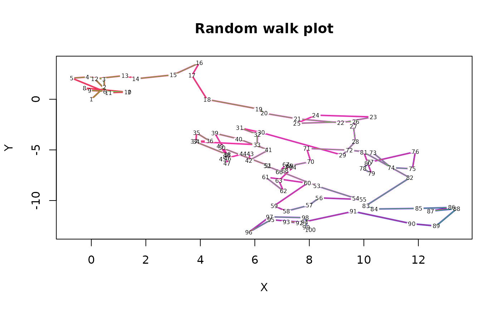

Line segments with scaled colors
color.scale.lines.RdDisplay line segments with colors scaled to numeric values.
Arguments
- x,y
Numeric vectors or a list with at least two components, the first two of which must be named x and y.
- reds,greens,blues
Color ranges into which to scale the numeric values.
- col
One or more colors to use for the resultant lines. Will be recycled if necessary.
- colvar
A numeric vector from which to scale the colors.
- ...
Additional arguments passed to segments.
Details
color.scale.lines displays line segments that can be individually colored according to a variety of methods. In order of precedence, if col is not NA, the color values passed will be used. If colvar is not NA, the function will call color.scale with the three color range arguments to determine the line colors. If colvar is the same length as length(x)-1, exactly enough colors for the number of lines displayed will be calculated. If shorter, some colors will be recycled and if longer, some colors will not be used. Finally, the values in y will be color-scaled if both of the above arguments are NA. Thus the user can pass predetermined colors, use colors scaled from an arbitrary vector of numerical values or use the y values. See color.scale for an explanation of specifying color ranges.
Note
The function is useful for highlighting a numeric dimension or adding an extra "dimension" to a plot.
Examples
# color a random walk "hot" (red) to "cold" (blue) on its distance
# from the starting point
x<-c(0,cumsum(rnorm(99)))
y<-c(0,cumsum(rnorm(99)))
xydist<-sqrt(x*x+y*y)
plot(x,y,main="Random walk plot",xlab="X",ylab="Y",type="n")
color.scale.lines(x,y,c(1,1,0),0,c(0,1,1),colvar=xydist,lwd=2)
boxed.labels(x,y,labels=1:100,border=FALSE,cex=0.5)
# now color the lines to show whether each step went away from
# or toward the starting position
color.scale.lines(x,y,col=2+(diff(xydist)>0))
boxed.labels(x,y,labels=1:100,border=FALSE,cex=0.5)
